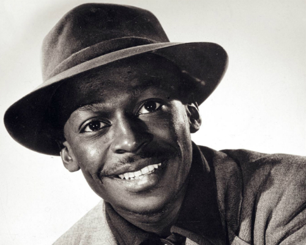

Miles Davis
Fast Facts About Miles Davis

- Miles was 13 years old when he started learning the trumpet
- He played and recorded Jazz for about 40 years.
- His mother was a great Blues pianist
- His album Kind of Blues sold more copies then any other jazz album.
- He helped create a different kind of Jazz.
- He was the bandleader of his band.
- He is one of the greatest Jazz musicians ever!
- He won 9 Grammys.
- He started his career with Charlie Parkers band.
- He was inducted into the Rock and Roll Hall of Fame.
- He is one of the most inspiring Jazz musicians ever!
- His middle name is Dewey
- He married actress Cicely Tyson